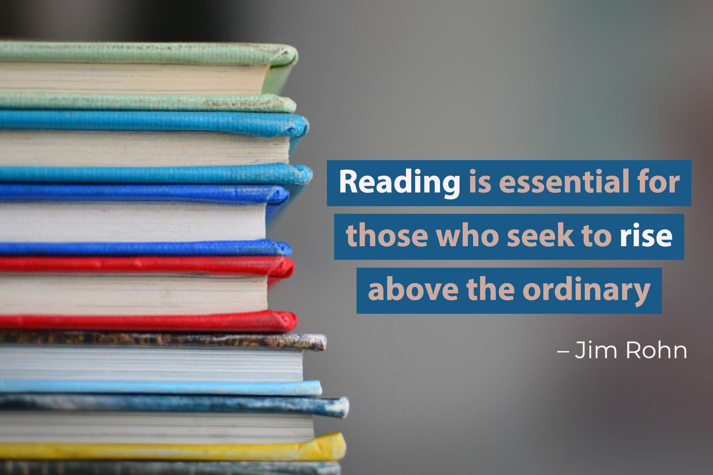

Rise above the ordinary — a data science reading list
As one of the fastest-growing industries, being a data scientist without a research group can be incapacitating. At the end of last year, I realized I am often missing out on new development in the industry, unknowingly reinventing the wheel, and falling short in conversations with experts. Being a data science consultant, my stress-level exploded as I constantly felt under-prepared going into client meetings.

So as my goal for 2020, I decided to set myself free of this stress.
“To know that you do not know is best. To think you know when you do not is a disease. Recognizing this disease as a disease is to be free of it.” — Lao Tzu
From this quote, the strategy emerged is rather simple: by reading more, I should become more up-to-date on AI-related news. This, in turn, increases my confidence to contribute to different AI-related discussions. Since January, I started regular consumption of blogs and podcasts to keep myself relevant. Every weekday, after yoga and meditation, and before my 10 a.m. stand-up, I dedicate an hour to read while having my first cup of coffee.
. . .
I have an Inbox Zero OCD, so I trimmed down my subscription to make sure that I get what I need without drowning in information. As a lead data science consultant with a firm focusing on ML deployment, I made sure my reading list can bump me up in terms of three areas:
- Things that AI leaders (my clients) will care about: state of the AI industry, state of the client industry, the type of stuff that is published by Gartner and McKinsey.
- Things that will make me more effective at my job: new libraries, new architecture, brushing up some maths/programming skills.
- Things that make good conversation starters: fun AI stories, start-up news, what the client’s competition is up to.
Most of the reading I do is from mailing lists and podcasts I subscribe to. The trade-off between having someone procure your reading list is the time spent looking for things to read versus quality reading material that is 100% aligned to your interest.
This is the subscription I come up with, but they’re constantly changing based on my needs. With the world shutting down and working-from-home becoming a norm, I hope this list can help inspire you to start your reading schedule. Seize the opportunity when no manager is constantly lurking behind you and watching your screen.
📩 Mailing Lists:
I’m organizing the list based on the target audience, reading time and what I like about it. Of course, the target audience is merely a recommendation and reading time is heavily dependent on how many links you click and how far down the rabbit hole you go. I literally can spend my entire reading-hour researching one article.
Anyway. Here goes 👇
1. The Batch by deeplearning.ai
The Batch is another of Andrew Ng’s brainchild, and it reminds me of having a research group on-tap. The group presents 6 well-written pieces on the latest development in deep learning every week.
👥 Target audience: academics, researchers and deep learning enthusiasts.
⏱ Reading time: ~30 minutes (weekly)
⭐ What I like about it: it is exceptionally well-organized. The articles are curated from a variety of sources with a great summary of what it is, how it works, why it matters, what’s behind the news and what the editors think about it.
2. Harvard Data Science Review
I can’t explain it better than the opening paragraph on the website, which reads:
As an open access platform of the Harvard Data Science Initiative, the Harvard Data Science Review (HDSR) features foundational thinking, research milestones, educational innovations, and major applications. It aims to publish contents that help to define and shape data science as a scientifically rigorous and globally impactful multidisciplinary field based on the principled and purposed production, processing, parsing and analysis of data.
👥 Target audience: there’s a column for everyone
⏱ Reading time: 60+ minutes (monthly)
⭐ What I like about it: there’s a nice website where the information is ordered by the type of audience it attracts. There is a panorama view for visions and debates, a pillar dedicated to data science education and various columns on history, industry leaders, theories, etc.
3. Medium Daily Digest
👥 Target audience: both aspiring and senior data scientists and engineers
⏱ Reading time: ~20 minutes (daily)
⭐ What I like about it: you can customize what you read quite easily, and it has a wide variety of content. Additionally, many popular libraries and tools also have their own profile on Medium. I get updates on Project Jupyter through the Jupyter Blog, and I first found out about Streamlit on Medium. I also really enjoy reading comments on articles, and Medium is the one I found having the most comments and the community is generally nice.
Since I also subscribe to publications that are not data science related, it helps me give my brain a break by reading up some other stuff. I do find the recommendation skewed towards articles behind the paid wall though.
4. O’Reilly Data & AI Newsletter
O’Reilly newsletter is a good weekly round-up of industry insights. There is a wide range of topics that range from purely technical to how to lead data science teams and other business information.
👥 Target audience: tech leaders & industry professionals
⏱ Reading time: ~20 minutes (weekly)
⭐ What I like about it: compared to the other mailing lists I follow, O’Reilly’s newsletter has a lot more “state of the [x]” articles. These articles are well-researched and have cool graphs and fun statistics to quote on. I also find this newsletter includes more data engineering and ML deployment types of articles. By the way, Data and AI are two separate newsletters.
5. KDNuggets News
This newsletter is split into featured articles, events/webinars, news, tutorials, and opinion pieces. I find KDNuggets to be a good starting point for data scientists who are just beginning their careers or people who are looking to get into data science.
👥 Target audience: more junior/intermediate data scientists
⏱ Reading time: < 10 minutes (daily)
⭐ What I like about it: Occasionally, I don’t understand how it is related, but I get reports from the likes of DataRobot, Gartner, and Figure8 in my inbox through KDNuggets. I enjoy these types of reports, as they are quite comprehensive in their analysis and have good statistics and visualization to support their claims.
🎧 Podcasts:
I listen to podcasts when I get ready in the morning or when I cook dinner at night. I’m horrific at multi-tasking so I picked the podcasts that have good challenging content but are also easy-to-follow.
1. Linear Digressions
Katie and Ben are the hosts of Linear Digressions. The show covers a bit about everything: data science, machine learning, model interpretability, career trajectory, etc. Katie is a data science consultant, so I find her examples and frame of thinking helps me a lot in communicating with my clients.
👥 Target audience: both aspiring and senior data scientists and engineers. A big shout-out to engineers here, because Ben helps to draw very good parallels between the data science and software engineering world.
⏱ Listening time: 20–30 minutes (weekly)
⭐ What I like about it: The conversational style between the co-hosts make it a very easy and entertaining listen. As an example, listening to your friends talk about BERT is a lot more interesting than listening to your professor talk about BERT. Ben asks insightful questions and Katie explains them in simple and understandable terms that I can understand — usually while juggling between chopping carrots and frying steaks.
2. Data Skeptic
The Data Skeptic Podcast has a range of topics related to data science, statistics, machine learning, and the like. The show picks a theme and covers it in-depth for several months — one of which I followed extensively was fake news and NLP. Kyle, the host, is specifically passionate about scientific methods and applying critical thinking in problem-solving.
👥 Target audience: both aspiring and senior data scientists and engineers
⏱ Listening time: 20–50 minutes (weekly)
⭐ What I like about it: there is usually an overarching theme that runs for multiple episodes, the topics are covered extensively. The beginning episodes are good for introduction and beginners and as the theme progresses the content becomes challenging but fun.
3. O’Reilly Data Show
The show explores the opportunities and techniques driving big data, data science, and AI. Each episode, the host Ben Lorica interviews leading industry professionals to talk about their experiences in the real-world.
** I also just realized that this show seems to be discontinued, but the host has a new podcast called the Data Exchange. I still think the episodes on O’Reilly Data Show are worth a listen though!
👥 Target audience: industry professionals, more towards machine learning engineers as a lot of the episodes are related to model deployment.
⏱ Listening time: 20–50 minutes (weekly)
⭐ What I like about it: the guests on the show are very well-versed and respected in their respective areas. It’s very interesting to hear about the variety of problems companies face and even more insightful to learn from their experiences.
. . .
That’s it for my data science reading list
Hope this post adds some content to your mailbox or inspires you to start a reading list yourself.
I’m always on the lookout for good newsletters and podcasts to follow, please leave a comment on good materials for me to follow.
. . .
Thanks for reading ⭐ Follow me on Medium, LinkedIn, or visit my Website. Also, if you want an evaluation of your machine learning deployment framework, email us at Melio Consulting.